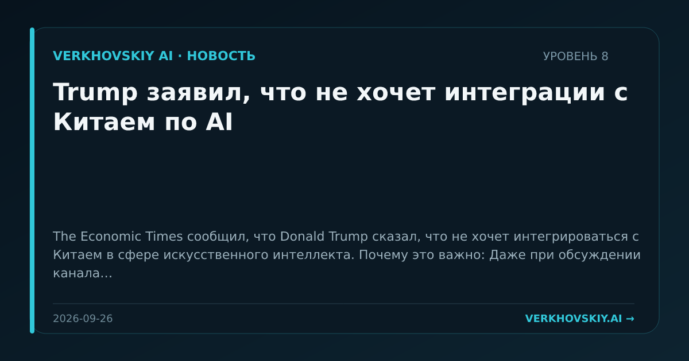

Trump заявил, что не хочет интеграции с Китаем по AI
The Economic Times сообщил, что Donald Trump сказал, что не хочет интегрироваться с Китаем в сфере искусственного интеллекта. Почему это важно: Даже при обсуждении канала связи сохраняется установка на разделение технологических контуров. Это усиливает сценарий параллельных AI-режимов вместо единого глобального рынка.